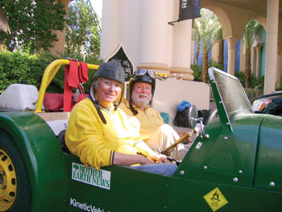

Woohoo! MAX won Escape from Berkeley!
What’s MAX? It’s a superefficient DIY car we’re developing for the $10 million Progressive Insurance Automotive X Prize competition. (See Here Comes the 100-mpg Car.)
What’s Escape from Berkeley? It was an alternative fuels rally that went from Berkeley, Calif., to Las Vegas. The theme was a half-in-jest look at a future without gas or money. The rules were you could start with 1 gallon of petroleum-based fuel; the rest of whatever propelled your passage could not be petroleum-based, and had to be acquired by bartering, begging or any other non-monetary means. The three-day route was planned for a 600-mile course that went over the Sierra Mountains at the 9,943-foot Tioga Pass, and then down across Death Valley to Sin City. It sounded like a good time to me and Sharon Westcott, one of my cohorts at Kinetic Vehicles.
For MAX’s fuel, we chose straight vegetable oil. We got a conversion kit from PlantDrive and installed it to work with MAX’s diesel engine. Thanks to MAX’s great fuel economy, we only needed a dozen 40-ounce bottles of cooking oil a day, which we begged from customers at grocery stores, showing our appreciation with commemorative T-shirts and copies of Mother Earth News.
Our main competition was the “Green Team,” which had a truck that runs on wood chips. They were the pre-race favorites, but they had to pull a trailer to carry their wood, and MAX is certainly faster than a truck pulling half a ton of lumber. When Tioga Pass was closed due to a snowstorm, we all had to backtrack and the 600-mile race became an 800-mile race. By the second night, MAX held a healthy lead. On day three, we reached the finish line, winning $5,000.
From home (Oregon) to Las Vegas and back, we put 2,400 miles on MAX and averaged 55 mpg, which is great considering the mpg-unfriendly conditions we encountered. Now we’re looking forward to MAX being the favorite in next year’s race!
|
 JAKE HASKELL Sharon Wescott and Jack McCornack with MAX at the finish line, victorious. |
|
|